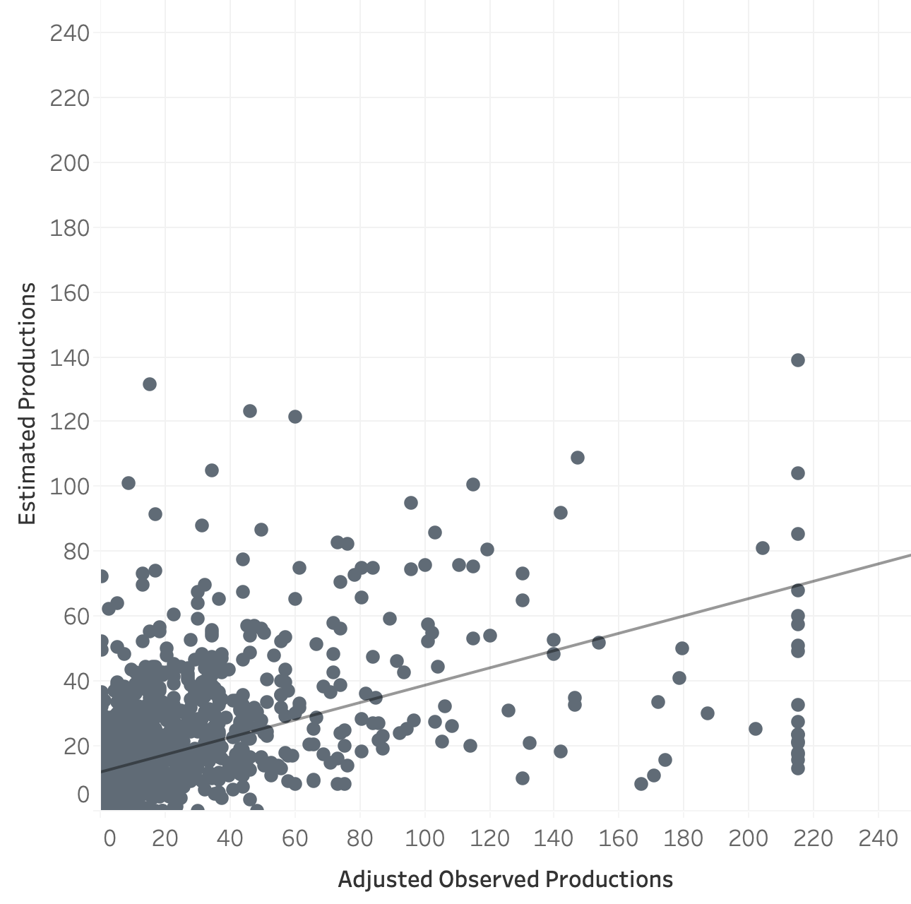

Airport
Caliper Corporation
April 26, 2021
Introduction
Air passenger travel to/from the Raleigh-Durham International Airport (RDU) is captured by the air passenger model.
A limited amount of data on air passengers is available and the modeling approach is therefore straightforward and requires a handful of assumptions. The available data is passive movements recordedfrom StreetLight Data. The benefits of this data is they provide a reasonable signal of movements to/from the airport. The drawbacks of this data include the following: * It does not distinguish between airport employees and air passengers. * It cannot distinguish between trip legs, for example the movement from home to an off-airport parking location and the movement from the off-airport parking location to the airport terminal.
StreetLight Data Summaries
The map below shows the distribution of trip productions to RDU per the StreetLight data. As expected, the data shows large amounts of activity in the zones surrounding the airport. For an air passenger model, we are less interested in the movement from, say, the off-airport parking facility to the airport, than we are the movement from a home or workplace to the off-airport parking facility. Ideally, an airport model would explicitly represent each movement. For the simple model being developed here, we want to focus on the primary (and longer) movement.
StreetLight “Raw” Productions

To ameliorate the impact of near-airport movements on the estimation of production models intended to locate the “true” origin of air passenger movements, we censor the StreetLight productions to a maximum value of 200. The map of truncated productions is shown in the map below.
StreetLight Censored Productions

Production Modeling
The goal of the air passenger production model is to generate travel from home and employment locations to the airport. Because all trips are destined to RDU, the production model acts as both a trip generation and trip distribution model.
To begin the data exploration and model estimation stage, we summarize the correlations between the socio-economic data expected to be relevant and airport productions. These correlations are shown in the table below. Note that a number of variables that would be useful to the production model, such as hotel rooms, are not available in the socio-economic data.
Correlations
| term | airport_productions |
|---|---|
| employment | 0.264 |
| Industry | 0.229 |
| Retail | 0.207 |
| Pct_Worker | 0.203 |
| Service_RateHigh | 0.191 |
| Office | 0.162 |
| high_earners | 0.126 |
| workers | 0.122 |
| HH | 0.117 |
| Service_RateLow | 0.106 |
| PctHighEarn | 0.085 |
| Total_POP | 0.079 |
| high_earn_distance | 0.071 |
| Median_Inc | 0.032 |
| hotel_rooms | -0.003 |
| BuildingS_NCSU | -0.009 |
| Other_NonInst_GQ | -0.011 |
| Inst_GQ | -0.011 |
| Stud_GQ | -0.018 |
| dist_to_airport_miles | -0.135 |
| airport_productions | NA |
The above table shows correlations between airport productions and the variables we would expect and like to be correlated with airport productions, including workers, high income persons, and employment.
Using the correlations as a guide, we estimate a series of linear regression models in a search for a parsimonious balance between model fit and logical coefficients.
Model Estimation Results
Numerous model estimations were conducted to find the preferred specification shown below. The preferred specification includes high earners, which is the number of high earners in each TAZ. A second term that interacts high earners with distance to the airport is included as well, which reduces the number of productions for high earners at greater distances from the airport.
The preferred specification includes employment which captures movements to/from work locations to the airport. The preferred specification collapses the employment categories. Specifications with employment separated by industry did not always reveal logical coefficients (e.g., a larger coefficient on industrial employment than office employment).
Other, non-preferred specifications are included in the tabs below.
Preferred
| variable | estimate | statistic | p.value |
|---|---|---|---|
| intercept | 4.0319 | 4.4617 | 0 |
| employment | 0.0142 | 16.4178 | 0 |
| high_earn_distance | -0.0027 | -10.1157 | 0 |
| high_earners | 0.1611 | 14.3533 | 0 |
| Adjusted R-squared | 0.2272 | NA | NA |
Model 01
| variable | estimate | statistic | p.value |
|---|---|---|---|
| intercept | 0.8272 | 0.8193 | 0.4127 |
| employment | 0.0152 | 17.1890 | 0.0000 |
| workers | 0.0248 | 13.2575 | 0.0000 |
| Adjusted R-squared | 0.1850 | NA | NA |
Model 02
| variable | estimate | statistic | p.value |
|---|---|---|---|
| intercept | 0.4955 | 0.5168 | 0.6054 |
| high_earn_distance | -0.0029 | -10.8953 | 0.0000 |
| high_earners | 0.1405 | 11.6115 | 0.0000 |
| hotel_rooms | -0.0407 | -0.5344 | 0.5932 |
| Industry | 0.0341 | 8.0535 | 0.0000 |
| Office | 0.0135 | 8.9028 | 0.0000 |
| Retail | 0.0350 | 11.1705 | 0.0000 |
| Service_RateHigh | 0.0594 | 6.1565 | 0.0000 |
| workers | 0.0143 | 4.0896 | 0.0000 |
| Adjusted R-squared | 0.2883 | NA | NA |
Model 03
| variable | estimate | statistic | p.value |
|---|---|---|---|
| intercept | 2.0344 | 2.3070 | 0.0212 |
| high_earn_distance | -0.0027 | -10.4521 | 0.0000 |
| high_earners | 0.1629 | 15.0695 | 0.0000 |
| Industry | 0.0320 | 7.5841 | 0.0000 |
| Office | 0.0127 | 8.4280 | 0.0000 |
| Retail | 0.0366 | 11.7341 | 0.0000 |
| Service_RateHigh | 0.0607 | 6.2719 | 0.0000 |
| Adjusted R-squared | 0.2828 | NA | NA |
Predicted Productions
The map below plots the predicted airport productions. In model application, the calculated productions will be scaled to airport attractions, which is the number of enplanements at RDU entered by the model user. The current chart assumes 15343 enplanements. It is also possible for the regression model to return a negative number of enplanements due to the negative coefficient on the high earner and distance interaction term. These productions have been censored at zero and will need to be similarly censored in model application.

The chart below plots the adjusted observed productions (truncated at 200 times the scaling necessary to matche the target attractions) against the estimated productions.

The chart below shows the adjusted observed and estimated trip length frequency distributions for movements to the airport. The model estimates slightly longer trips than the StreetLight data. This is expected because the StreetLight data will, in many cases, fail to capture the true origin of the movement, misunderstanding stops at gas stations, cell phone lots, rental car facilities, etc, as the origin.

Diurnal Factors
The table below summarizes the production to airport and airport to production trips by time of day, based on the StreetLight data.
P to A Diurnal Factors from StreetLight
| purpose | day_part | share |
|---|---|---|
| To Airport | 1: Early AM (12am-6am) | 0.170 |
| To Airport | 2: Peak AM (6am-10am) | 0.226 |
| To Airport | 3: Mid-Day (10am-3pm) | 0.293 |
| To Airport | 4: Peak PM (3pm-7pm) | 0.225 |
| To Airport | 5: Late PM (7pm-12am) | 0.085 |
| To Airport | All | 1.000 |
A to P Diurnal Factors from StreetLight
| purpose | day_part | share |
|---|---|---|
| From Airport | 1: Early AM (12am-6am) | 0.064 |
| From Airport | 2: Peak AM (6am-10am) | 0.132 |
| From Airport | 3: Mid-Day (10am-3pm) | 0.302 |
| From Airport | 4: Peak PM (3pm-7pm) | 0.283 |
| From Airport | 5: Late PM (7pm-12am) | 0.219 |
| From Airport | All | 1.000 |
The time periods used for the StreetLight extraction do not directly align with the time periods used for the updated travel model. By assuming a uniform distribution across the StreetLight time periods, we can create the below diurnal factors using the StreetLight data and model time periods.
P to A Travel Model Diurnal Factors
| purpose | direction | period | share |
|---|---|---|---|
| To Airport | P to A | AM | 0.113 |
| To Airport | P to A | MD | 0.377 |
| To Airport | P to A | PM | 0.155 |
| To Airport | P to A | NT | 0.354 |
| To Airport | P to A | All | 1.000 |
A to P Travel Model Diurnal Factors
| purpose | direction | period | share |
|---|---|---|---|
| From Airport | A to P | AM | 0.066 |
| From Airport | A to P | MD | 0.370 |
| From Airport | A to P | PM | 0.195 |
| From Airport | A to P | NT | 0.369 |
| From Airport | A to P | All | 1.000 |
Mode Choice
The StreetLight Data does not provide insight to the mode choice decision made by air passengers. As such, no information is available to base a mode choice model on. We therefore will add the airport trips to the home-based other trip purpose prior to mode choice and use the home-based other model to simulate the mode choice decision for air passengers.
Caliper Corporation, 2021